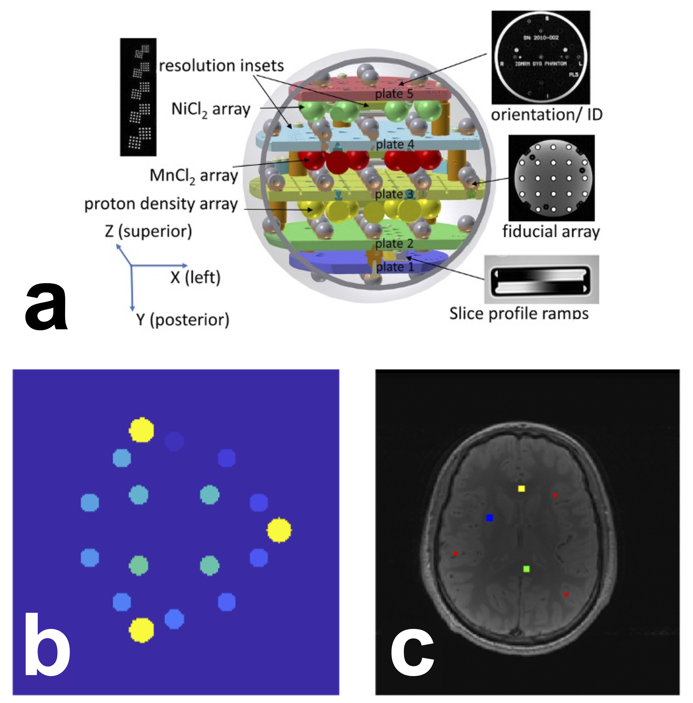

Introduction
Introduction#
Quantitative MRI (qMRI) has a reproducibility problem (Keenan et al. 2019). Despite the promise that qMRI improves specificity and reproducibility of measurements over clinical MRI scans, few qMRI techniques have entered the clinic. Even the most fundamental MR parameters cannot be measured with sufficient reproducibility and precision across clinical scanners to pass the second of six stages of technical assessment for clinical biomarkers (Fryback and Thornbury 1991; Schweitzer 2016; Seiberlich et al. 2020). Nearly half a century has passed since the first quantitative MRI maps (spin-lattice relaxation time, T1) were reported (Pykett and Mansfield 1978), yet there is still disagreement in reported values for his fundamental parameter (T1) across different sites, vendors, and implementations (Stikov et al. 2015).
Amongst fundamental MRI parameters, T1 holds significant importance. It represents the time it takes for longitudinal magnetization to recover after being disturbed by an RF pulse. The T1 value varies based on molecular mobility and magnetic field strength (Bottomley et al. 1984; Wansapura et al. 1999; Dieringer et al. 2014), making it a valuable parameter for distinguishing between tissue types. Accurate knowledge of T1 values is essential for optimizing clinical MRI pulse sequences for contrast and time efficiency (Ernst and Anderson 1966; Redpath and Smith 1994; Tofts 1997) and as a calibration parameter for other quantitative MRI techniques (Sled and Pike 2001; Yuan et al. 2012). Amongst the number of techniques to measure T1, inversion recovery (IR) (Drain 1949; Hahn 1949) is widely held as being the gold standard T1 mapping technique, as it is very robust against other effects (e.g. B1 inhomogeneity) or potential errors in measurements (e.g. insufficient spoiling) (Stikov et al. 2015). However, because the technique requires a long repetition time (TR > T1), it is very slow and impractical for whole-organ measurements, limiting its clinical use. In practice, it is mostly used as a reference to validate other T1 mapping techniques, such as variable flip angle imaging (VFA) (Fram et al. 1987; Deoni, Rutt, and Peters 2003; Cheng and Wright 2006) and MP2RAGE (Marques et al. 2010).
Efforts have been made to develop quantitative MRI phantoms to assist in standardizing T1 mapping methods (Keenan et al. 2018). A quantitative MRI standard system phantom was created in a joint project between ISMRM and the National Institute of Standards and Technology (NIST) (Stupic et al. 2021), and has since been commercialized (Premium System Phantom, CaliberMRI, Boulder, Colorado). The spherical phantom has a 57-element fiducial array containing spheres with doped liquids that model a wide range of T1, T2, and PD values. The reference values of each sphere were measured using NMR at 1.5T and 3.0T. The standardized concentration for relaxometry values established as references by NIST are also used by another company for their quantitative relaxometry MRI phantoms (Gold Standard Phantoms Ltd., Rochester, England). The cardiac TIMES phantom (Captur et al. 2016) is another commercially available system phantom used for T1, focusing on T1 and T2 values in blood and heart muscles, pre- and post-contrast. The ISMRM/NIST phantom has been used in a few large multicenter studies already, such as . (Bane et al. 2018) where they compared measurements at eight sites on a single phantom using the inversion recovery and VFA T1 mapping protocols recommended by NIST for their phantom, as well as some site-specific imaging protocols used for DCE. In another study led by NIST researchers (Keenan et al. 2021), T1 measurements were done at two clinical field strengths (1.5T and 3.0T) and 27 MRI systems (three vendors) using the recommended NIST protocols. That study found no significant relationship between T1 discrepancies of the measurements and the MRI vendors used.
The 2020 ISMRM reproducibility challenge posed the following question: will an imaging protocol independently-implemented at multiple centers reliably measure what is considered one of the fundamental MR parameters (T1) using the most robust technique (inversion recovery) in a standardized phantom (ISMRM/NIST system phantom). The challenge aimed at assessing the variability in measurements due to different groups reproducing a protocol from a specific publication (Barral et al. 2010). As the focus of this challenge was on reproducibility, the challenge design emphasized the use of reproducible research practices, such as sharing code, pipelines, data, and scripts to reproduce figures. To be more inclusive and broaden participation, participants were also invited to data acquired on healthy subjects if they did not have access to the necessary ISMRM/NIST system phantom, provided that their local and institutional ethics protocols permitted it.
Materials#
The challenge was launched for those with access to the International Society of Magnetic Resonance in Medicine/National Institute of Standards and Technology (ISMRM/NIST) system phantom (Stupic et al. 2021) (Premium System Phantom, CaliberMRI, Boulder, Colorado). Two versions of the phantom have been produced with slightly different quantitative parameters values in the liquid spheres. Phantoms with serial numbers 0041 or less are referred to as “Version 1”, and those 0042 or greater are “Version 2”. The phantom has three plates containing sets of 14 spheres for ranges of proton density (PD), T1 (NiCl2), and T2 (MnCl2) values. Reference T1 values at 20 °C and 3.0 T for the T1 plate are listed in Table 1 for both versions of the phantom. Participants were instructed to record the temperature before and after scanning the phantom using the phantom's internal thermometer. Instructions for positioning and setting up the phantom were provided to participants through the NIST website.
Table 1. Reference T1 values of the “T1 plate” of the standard phantom (for both phantom versions) measured at 20 °C and 3.0 T. Phantoms with serial numbers 0041 or less are referred to as “Version 1”, and those 0042 or greater are “Version 2”.Sphere # |
Version 1 (ms) |
Version 2 (ms) |
|---|---|---|
1 |
1989 ± 1.0 |
1883.97 ± 30.32 |
2 |
1454 ± 2.5 |
1330.16 ± 20.41 |
3 |
984.1 ± 0.33 |
987.27 ± 14.22 |
4 |
706 ± 1.0 |
690.08 ± 10.12 |
5 |
496.7 ± 0.41 |
484.97 ± 7.06 |
6 |
351.5 ± 0.91 |
341.58 ± 4.97 |
7 |
247.13 ± 0.086 |
240.86 ± 3.51 |
8 |
175.3 ± 0.11 |
174.95 ± 2.48 |
9 |
125.9 ± 0.33 |
121.08 ± 1.75 |
10 |
89.0 ± 0.17 |
85.75 ± 1.24 |
11 |
62.7 ± 0.13 |
60.21 ± 0.87 |
12 |
44.53 ± 0.090 |
42.89 ± 0.44 |
13 |
30.84 ± 0.016 |
30.40 ± 0.62 |
14 |
21.719 ± 0.005 |
21.44 ± 0.31 |
Participants without access to the ISMRM/NIST phantom were encouraged to collect healthy human brain T1 maps following their institutional ethical guidelines and with participants' consent to participate in the challenge. To ensure consistency across datasets, single-slice positioning parallel to the AC-PC line was recommended. All submitted datasets and subsequent fitted T1 maps were to be uploaded to the data sharing website OSF.io, and thus participants were informed obtain consent for open-data sharing before scanning and to anonymize their data before submission. As the submitted single-slice inversion recovery images would be along the AC-PC line, they are unlikely to contain sufficient information facial identification, and therefore de-masking was not recommended. Participants who submitted human data for this challenge provided written confirmation to the organizers that their data for this challenge was in accordance with their institutional ethics committee (or equivalent regulatory body) and that the subjects had consented to sharing their data as described in the challenge.
Protocol#
Participants were instructed to acquire data for T1 mapping data using the spin-echo inversion recovery protocol for T1 mapping as reported in (Barral et al. 2010), as detailed in Table 2. This protocol uses four inversion times optimized for human brain T1 values and uses a relatively short TR (2550 ms). It’s important to note that this acquisition protocol is not suitable for T1 mapping fitting models that assume TR > 5T1. Instead, more general models of inversion recovery, such as the Barral et al. fitting model described in Section 2.4.1, can be used to fit this data.
Table 2. Imaging protocol for inversion recovery T1 mapping proposed to the participants for the 2020 joint RRSG-qMRSG reproducibility challenge. The protocol is the brain imaging protocol used in (Barral et al. 2010), and which is meant for the T1 values observed in healthy human brains.Pulse Sequence |
Spin-echo inversion recovery |
|---|---|
Repetition Time (TR) |
2550 ms |
Inversion Time (TI) |
50, 400, 1100, 2500 ms |
Echo Time (TE) |
14 ms |
In-plane resolution |
1x1 mm2 |
Slice thickness |
2 mm |
Participants were advised to adhere to this protocol as closely as possible, but to report any differences in protocol parameters due to technical limitations of their scanners and/or software. The recommended data exportation type was complex (magnitude & phase, or real & imaginary), and magnitude-only data was also acceptable if complex data could not be exported.
Data Submissions#
Data submissions for the challenge were managed through a dedicated repository on GitHub, accessible at https://github.com/rrsg2020/data_submission. This allowed transparent and open review of the submissions, as well as better standardization of the process. All datasets had to be converted to the NIfTI file format, and images from different TIs needed to be concatenated into the fourth (or “time”) dimension. Magnitude-only datasets required one NIfTI file, while complex datasets required two files (magnitude and phase, or real and imaginary). Additionally, a configuration file containing submission, dataset, and acquisition details (such as data type, submitter name and email, site details, phantom or volunteer details, and imaging protocol details) was required for each submitted dataset to ensure that the information was standardized and easily found. Each submission was reviewed to confirm that guidelines were followed, and then datasets and configuration files were uploaded to OSF.io. A Jupyter Notebook (Kluyver et al. 2016; Beg et al. 2021) pipeline was used to generate T1 maps at this stage also for quality assurance. Links to the Jupyter Notebook for reproducing the T1 map were shared for each submission using the MyBinder platform, ensuring that computation environments were reproducible without the need for installation of software packages on peoples local computers.
Fitting Model and Pipeline#
A reduced-dimension non-linear least squares (RD-NLS) approach was used to fit the complex general inversion recovery signal equation:
where a and b are complex constants. This approach, introduced in (Barral et al. 2010), models the general T1 signal equation without approximating for a very long TR. The a and b constants inherently factor TR in them. Barral et al. shared the implementation of their fitting algorithm used in their paper. To facilitate its use in our pipelines, we used a wrapper around this code available in the open-source software qMRLab (Cabana et al. 2015; Karakuzu et al. 2020), which provides a standardized API to call the fitting in MATLAB/Octave scripts.
A Jupyter Notebook data processing pipeline was written using MATLAB/Octave. This pipeline automatically downloads all the datasets, loads each dataset configuration file, fits the T1 data voxel-wise, and exports the resulting T1 map to the NIfTI and PNG formats for quality assurance. This pipeline is available in a GitHub repository (https://github.com/rrsg2020/t1_fitting_pipeline, filename: RRSG_T1_fitting.ipynb). Once all submissions were collected and the pipeline was executed, the T1 maps were uploaded to OSF.io.
Image Labeling & Registration#
The T1 plate of the phantom had 14 spheres that were labeled as the regions-of-interest (ROI) using a numerical mask template created in MATLAB, provided by NIST researchers (Figure 1–a). To avoid potential edge effects in the T1 maps, the ROI labels were reduced to 60% of the expected sphere diameter. A registration pipeline in Python using the Advanced Normalization Tools (ANTs) (Avants, Tustison, and Song 2009) was developed and shared in the “analysis” repository of our GitHub organization (https://github.com/rrsg2020/analysis, filename: register_t1maps_nist.py). The ROI labels template was nonlinearly registered to each submitted dataset’s T1 map uploaded to OSF.io.
Figure 1. ROI selection for the NIST phantom (a) and the human brain (b). a) The 14 ROIs (shades of blue/green) were automatically generated using a script provided by NIST. In yellow are the three reference pins in the phantom, and are not ROIs or spheres. b) ROIs were manually segmented in the human brains in four regions: the genu (yellow, 5x5 voxels), splenium (green, 5x5 voxels), deep gray matter (blue, 5x5 voxels), and cortical gray matter (red, three sets of 3x3 voxels). Note: due to differences in slice positioning from the single-slice datasets provided by certain sites, for some datasets it was not possible to manually segment an ROI in the genu or deep gray matter. In the case of the missing genu, left or right frontal white matter was selected; for deep grey matter, it was omitted entirely for those cases. {kind=link}
Manual ROIs were manually segmented using FSLeyes (McCarthy 2019) in four regions for human datasets (Figure 1-b): genu, splenium, deep gray matter, and cortical gray matter. Automatic segmentation was not used because the data was single-slice and there was inconsistent slice positioning between datasets.
Analysis and Statistics#
Analysis code and scripts were developed and shared in a version-tracked public GitHub repository. Python-based Jupyter Notebooks were used for both the quality assurance and main analysis workflows. The computational environment requirements were containerized in Docker Docker (Merkel 2014; Boettiger 2015), allowing for an executable environment that can reproduce the analysis in a web browser through MyBinder (Project Jupyter et al. 2018). Backend Python files handled reference data, database handling, ROI masking, and general analysis tools, while configuration files managed the dataset information which were downloaded and pooled using a script (make_pooled_datasets.py). The databases were created using a reproducible Jupyter Notebook script and subsequently saved in the repository.
For the NIST phantom data, mean T1 values for each ROI were compared with temperature-corrected reference values and visualized in three different types of plots (linear axes, log-log axes, and error relative to the reference value). This comparison was repeated for individual measurements at each site and for all measurements grouped together. Temperature correction was carried out via interpolation of the set of reference NIST T1 values between 16 °C and 26 °C (2 °C intervals), listed in the phantom technical specifications. For the human datasets, a notebook was created to plot the mean and standard deviations for each tissue ROI from all submissions from all sites. All the quality assurance and analysis plot images were saved to the repository for ease-of-access and a timestamped version-controlled record of the state of the analysis figures. The database files of ROI values and acquisition details for all submissions were also saved to the repository.
An interactive dashboard was developed in Dash by Plotly (Plotly Technologies Inc. 2015) and hosted by NeuroLibre (Karakuzu et al. 2022) to provide an interactive approach for exploring the data, analysis, and statistics of the challenge results. The dashboard visualizes the mean, median, standard deviation, and coefficient of variations for each phantom sphere and brain ROI. The data was collected from the pre-prepared databases of masked ROI values and incorporated other database information, such as phantom version, temperature, MRI manufacturer, and reference values. The interactive dashboard displays these results for all measurements at all sites.
Submissions#
Nineteen participants submitted data that were approved, which included 41 T1 maps of the NIST/system phantom, and 56 brain T1 maps. It should be noted that these numbers include a subset of measurements where both complex and magnitude-only data from the same acquisition were used to fit T1 maps, thus the total number of unique acquisitions is lower than the numbers reported above. The datasets were collected on three MRI manufacturers (Siemens, GE, Philips) and were acquired at 3.0 T, except for one dataset acquired at 350 mT. To showcase the heterogeneity of the independently-implemented submissions, Figure 2 displays six T1 maps of the phantoms submitted to the challenge.
Of these datasets, several submissions went beyond the minimum acquisition and acquired additional datasets using the NIST phantom, such as a traveling phantom (7 scanners), scan-rescan , same-day rescans on two MRIs, short TR vs long TR, and 4 point TI vs 14 point TI. For humans, one site acquired 13 subjects on three scanners (two manufacturers), one site acquired 6 subjects , and one site acquired a subject using two different head coils (20 channels vs. 64 channels).
Figure 2. Example T1 maps that were submitted. Note the differences in acquisitions (e.g. FOV (top middle), orientation (bottom right, k-space pattern (top left and right) and resulting artifacts in the T1 maps (e.g. ghosting (bottom left), ringing (bottom middle), noise profiles (top left and bottom right), deformation/slice mispositioning (top right)) resulting from the independently-implemented acquisition protocols.from os import path
import os
if path.isdir('analysis')== False:
!git clone https://github.com/rrsg2020/analysis.git
dir_name = 'analysis'
analysis = os.listdir(dir_name)
for item in analysis:
if item.endswith(".ipynb"):
os.remove(os.path.join(dir_name, item))
if item.endswith(".md"):
os.remove(os.path.join(dir_name, item))
# Imports
from pathlib import Path
import pandas as pd
import json
import nibabel as nib
import numpy as np
import matplotlib.pyplot as plt
import matplotlib.animation as animation
from IPython.display import Video
import glob
from analysis.src.plots import *
from analysis.make_pooled_datasets import *
# Configurations
configFile = Path('analysis/configs/3T_NIST_T1maps.json')
data_folder_name = 'analysis/3T_NIST_T1maps'
output_gif_folder = Path("analysis/plots/01-wholedataset_gif_NIST/")
output_gif_name = 'NIST.gif'
# Download datasets
if not Path(data_folder_name).exists():
make_pooled_dataset(configFile, data_folder_name)
with open(configFile) as json_file:
configJson = json.load(json_file)
def get_image(dataset_name, key2):
# Load T1 image data
t1_file = configJson[dataset_name]['datasets'][key2]['imagePath']
t1 = nib.load(Path(data_folder_name) / t1_file)
t1_volume = t1.get_fdata()
# Handle 2D vs 3D volume case
dims = t1_volume.shape
if (len(dims) == 2) or (np.min(dims) == 1):
im = np.rot90(t1_volume)
else:
index_smallest_dim = np.argmin(dims)
numberOfSlices = dims[index_smallest_dim]
midSlice = int(np.round(numberOfSlices/2))
if index_smallest_dim == 0:
im = np.rot90(np.squeeze(t1_volume[midSlice,:,:]))
elif index_smallest_dim == 1:
im = np.rot90(np.squeeze(t1_volume[:,midSlice,:]))
elif index_smallest_dim == 2:
im = np.rot90(np.squeeze(t1_volume[:,:,midSlice]))
xAxis = np.linspace(0,im.shape[0]-1, num=im.shape[0])
yAxis = np.linspace(0,im.shape[1]-1, num=im.shape[1])
return im, xAxis, yAxis
im_1, xAxis_1, yAxis_1 = get_image('wang_MDAnderson_NIST', 'day2_mag')
im_2, xAxis_2, yAxis_2 = get_image('CStehningPhilipsClinicalScienceGermany_NIST', 'Bonn_MR1_magnitude')
im_3, xAxis_3, yAxis_3 = get_image('mrel_usc_NIST', 'Session1_MR1')
im_4, xAxis_4, yAxis_4 = get_image('karakuzu_polymtl_NIST', 'mni')
im_5, xAxis_5, yAxis_5 = get_image('madelinecarr_lha_NIST', 'one')
im_6, xAxis_6, yAxis_6 = get_image('matthewgrechsollars_ICL_NIST', 'magnitude')
im_6 = np.flipud(im_6)